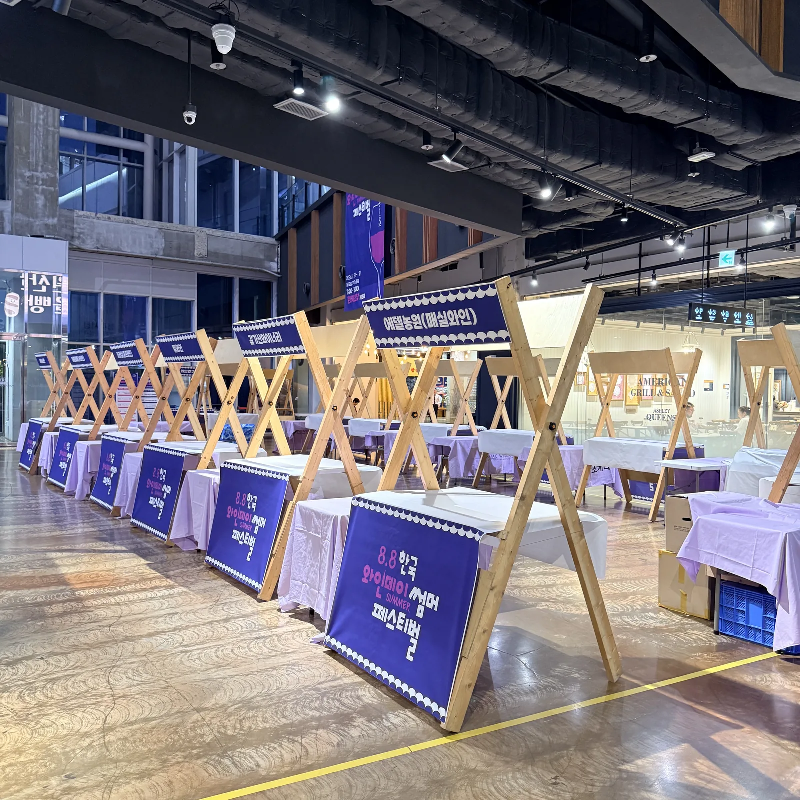
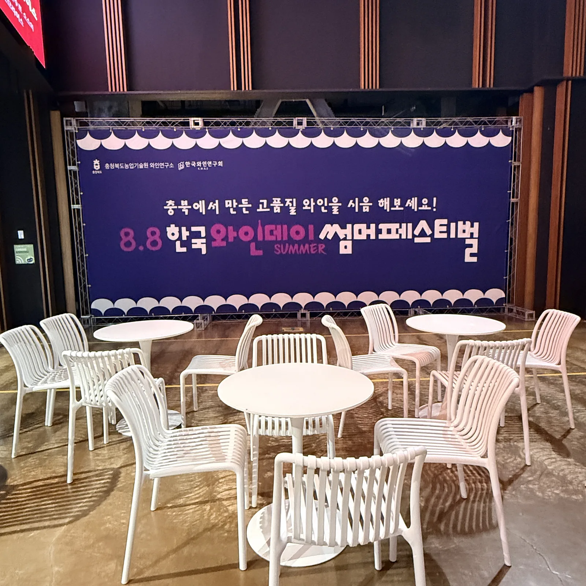
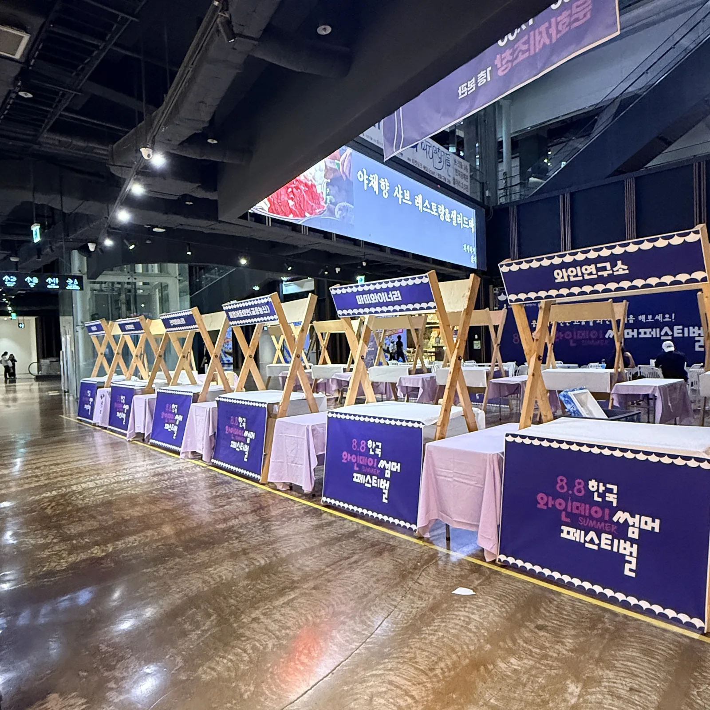

축제 부스라고 하면 야외 천막을 떠올리지만, 청주 시내 축제는 실내 아트리움이나 건물 로비에서 열리는 경우도 많습니다. 천막 대신 부스 프레임, 바닥 고정 대신 무게추, 그늘 대신 조명이 필요합니다. 와인데이 썸머페스티벌 현장을 기준으로 실내 부스 준비 순서를 적습니다.

실내 부스는 "프레임 + 테이블 + 배너" 세 가지로 끝납니다
실내에서는 천막 지붕이 필요 없으니 나무 · 알루미늄 프레임으로 부스 경계만 세우고, 접이식 테이블에 테이블보를 씌워 진열대를 만듭니다. 부스 이름은 프레임 상단 배너로 통일하면 멀리서도 읽힙니다. 이 구성은 설치가 빨라 부스 30개를 3시간 안에 세울 수 있습니다.

판매 부스 동선: 시음 · 결제 · 대기 줄을 나눕니다
와인 · 먹거리 축제는 시음 줄이 판매대를 막는 게 가장 흔한 문제입니다. 부스 앞 1.5m를 비워 대기 줄을 만들고, 부스 사이 통로는 최소 2.5m를 확보합니다. 줄 차단봉을 부스 3개마다 하나씩 두면 줄이 옆 부스로 넘어가지 않습니다.
- 부스 앞 대기 공간 1.5m
- 통로 폭 2.5m 이상 (휠체어 · 유모차 교행)
- 휴게 테이블은 부스 열과 떨어진 곳에 모아서

야간에는 조명이 부스 얼굴입니다
실내라도 저녁 행사는 천장 조명만으로 부스가 어둡습니다. 프레임 상단에 스트링 라이트나 스팟 조명을 달면 사진이 살고 상품이 보입니다. 전원은 부스 열마다 한 라인씩 돌리고, 바닥 케이블은 프로텍터로 덮습니다.
휴게 공간은 "앉고 싶은 자리"로
흰 라탄 테이블과 의자 세트는 사진 찍기 좋은 자리가 되어 참가자가 오래 머뭅니다. 부스 10개당 휴게 테이블 2~3세트가 기준입니다.
자주 묻는 질문
Q실내 행사장 바닥에 손상이 가지 않나요?
프레임과 테이블 다리에 보호 캡을 씌우고, 무게추로 고정해 바닥에 구멍을 내지 않습니다. 대리석 · 마루 바닥 모두 가능합니다.
Q부스 프레임 대신 천막을 실내에 세울 수도 있나요?
천장 높이가 3m 이상이면 캐노피 천막도 실내에 세울 수 있습니다. 다만 프레임 부스가 더 가볍고 통로를 덜 차지합니다.
Q청주 시내 축제는 설치 시간이 제한되는데 가능한가요?
실내 부스 30개 기준 3시간 안에 세팅합니다. 새벽 · 야간 설치 모두 가능하니 장소 사용 가능 시간을 알려 주세요.